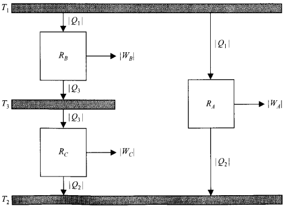

Temperatura Termodinamica
In Chp 1 it was pointed out that the zeroth law of thermodynamics establishes the basis for the measurement of temperature, but an empirical temperature scale must be defined in term of the thermometric property of a specific substance and thermometer, such as the ideal-gas temperature scale using the constant-volume gas thermometer.
A temprature scale that is independent of the nature of the working substance, which is called an absolute or thermodynamic temperature scale, would be most desirable. A Carnot engine absorbing |Qh| units of heat from a reservoir at a higher temperature Th and rejecting |QL| units of heat to a reservoir at a lowe temperature TL has an efficiency ηR that is indpependent of the nature of the working substance
The efficiency depends only on the two temperatures of the reservoirs,
ηR = φ(Th,TL)
where φ(Th,TL) is an unknown function of the two temperature. Rearranging the above two equations, we get
|QH| / |QL| = 1/ (1 - φ(Th,TL)) = f(TH, TL) (5.3)
where f(TH, TL) is also an unknown function of the two temperatures. Let us apply Eq. 5.3 to the three Carnot engines operating between the three reservoirs shown in Fig., where T1 > T3 > T2. For enginge RA
|Q1| / |Q2| = f(T1, T2)
Now consider the second Carnot engine RB and third Carnot engine RC. Since the heat |Q3| rejected by the second Carnot engine RB is absorbed by the third Carnot engine RC, both engines working together are equivalent to the first Carnot engine RA. Thus, engine RB absorbs the same heat |Q1| from the reservoir at T1 that engine RA absorbs. So, for engine RB
|Q1| / |Q3| = f(T1, T3)
Engine RA, rejects heat |Q2| to the low-temperature reservoir, so engine RC must also reject hear |Q2| to the low-temperature reservoir. Thus, for engine RC
|Q3| / |Q2| = f(T3, T2)
Since
|Q1| / |Q2| = (|Q1| / |Q3|) / (|Q2| / |Q3|)
we have the result that
f(T1, T2) = f(T1, T3) / f(T2, T3) (5.4)
Now the temperature T3 is arbitrarily chosen; and since it does not appear in the left-hand member of Eq (5.4), T3 must, therefore, drop out of the ratio on the right. After it has been canceled, the numerator can be written ψ(T1) and the denominator ψ(T2), where ψ is another unknown function of one temperature. Thus,
|Q1| / |Q2| = ψ(T1)/ ψ(T2) (5.5)
We now use (5.5) to define a temperature scale in terms of the Carnot-cycle ratio |Q1| / |Q2|. To do so, we choose a specific function for ψ. The simplest choice for ψ is “take the first power.” This choice gives the thermodynamic temperature scale. Temperature ratios on the thermodynamic scale are thus defined by
|Q1| / |Q2| = T1/ T2 (5.6)
Thus, two temperatures on the thermodynamic scale are to each other as the absolute values of the heats absorbed adn rejected, respectively, by a Carno engine operating between reservoirs at these temperature
It is seen that the thermodynamic temperature scale is independent of the specific characteristics of any particular substance. Thus, the Carnot engine supplies the universality that is lacking in the ideal-gas temperatura scale.
In 1848 Kelvin was forced to choose a linear function for the ψ because all the scientific and engineering data had been obtained from the mercury-in-glass thermometer, which is essentially linear over its useful range.
To complete the definition of the thermodynamic scale, we proceed to assign the arbitrary value of 273.16 K to the temperature of the triple point of water Ttr, as in Chp 1 thus:
Ttr = 273.16 K
For a Carnot engine operating between reservoirs at the temperatures T and Ttr, it holds
|Q| / |Qtr| = T/ Ttr
or
T = 273.16 K |Q| / |Qtr| = T/ Ttr (5.7)
Comparing Eq 5.7 with the corresponding equation for the ideal-gas temperature:
T = 273.16 K ⋅ limPtr → 0 P / |Ptr| (5.7)
It is seen that, in the thermodynamic scale |Q| plays the role of a "thermometric property" for a Carnot cycle, just as pressure in the thermometric property for a constant-volume gas thermometer. Heat Does not, however have the objection attached to the thermodynamic coordinate pressure of the arbitarily chosen gas-thermometer, inasmuch as the behavior of a Carnot engine is independent of the nature of the working substance.